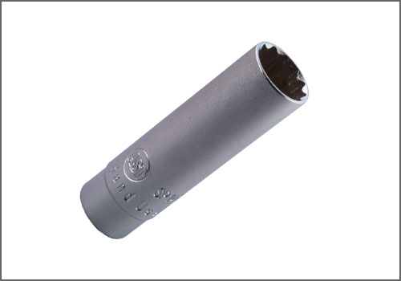
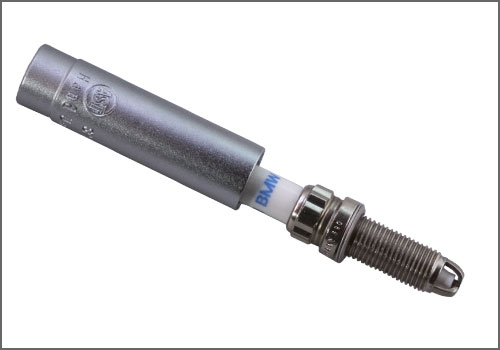

Aftermarket Tools
Spark Plug Socket
AST tool# SP1412


14mm, 12-Point Spark Plug Socket with 3/8" drive. Applicable to 2007 and later BMW 135, 335, 535 and X6 with 3.0L twin-turbo motors. Also works on 2007 and newer Turbocharged Mini Coopers.
Comparable to BMW tool # 121 220.
NOTE: Spark Plug Socket is slender in design to fit application.
- 14mm, 12-Point Spark Plug Socket with 3/8" drive
- Applicable to 2007 and later BMW 335 and 535 with 3.0L twin-turbo motors
- Spark Plug Socket is slender in design to fit application.
- 2007 and newer Turbocharged Mini Coopers.
Contact AST for pricing.
Assenmacher Specialty Tools
1-800-525-2943